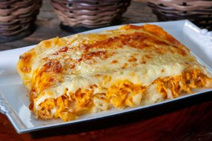

Bolo de Chocolate

Ingredientes
- 2 xícaras de farinha de trigo
- 1 xícara de açúcar
- 1 xícara de leite
- 3 ovos
- 1/2 xícara de óleo
- 1 xícara de chocolate em pó
- 1 colher de fermento
Modo de Preparo
Misture todos os ingredientes, coloque em uma forma untada e leve ao forno por 40 minutos.
Salada de Frutas

Ingredientes
- 2 bananas
- 1 maçã
- 1 laranja
- 1 cacho de uvas
- Suco de 1 limão
- 1 colher de mel
Modo de Preparo
Corte todas as frutas em pedaços pequenos, misture com o suco de limão e o mel. Sirva gelado.
Lasanha
Ingredientes
- 500g de massa de lasanha
- 500g de carne moída
- 2 xícaras de molho de tomate
- 300g de queijo mussarela
- 1 cebola picada
- 2 dentes de alho picados
- Sal e pimenta a gosto
Modo de Preparo
Refogue a cebola e o alho, adicione a carne e o molho de tomate. Monte a lasanha em camadas e leve ao forno por 30 minutos.